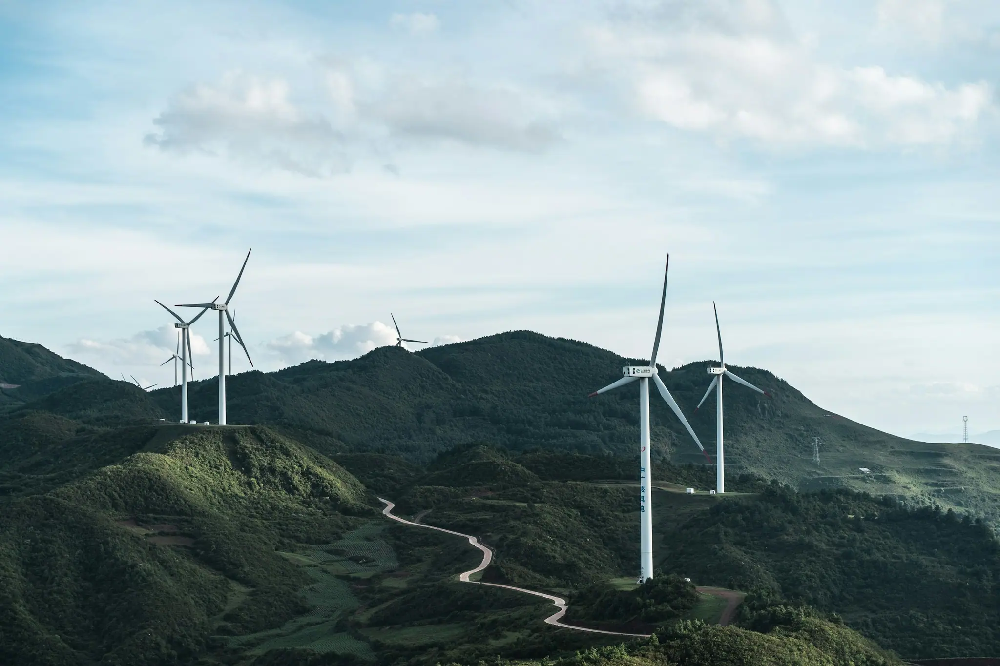
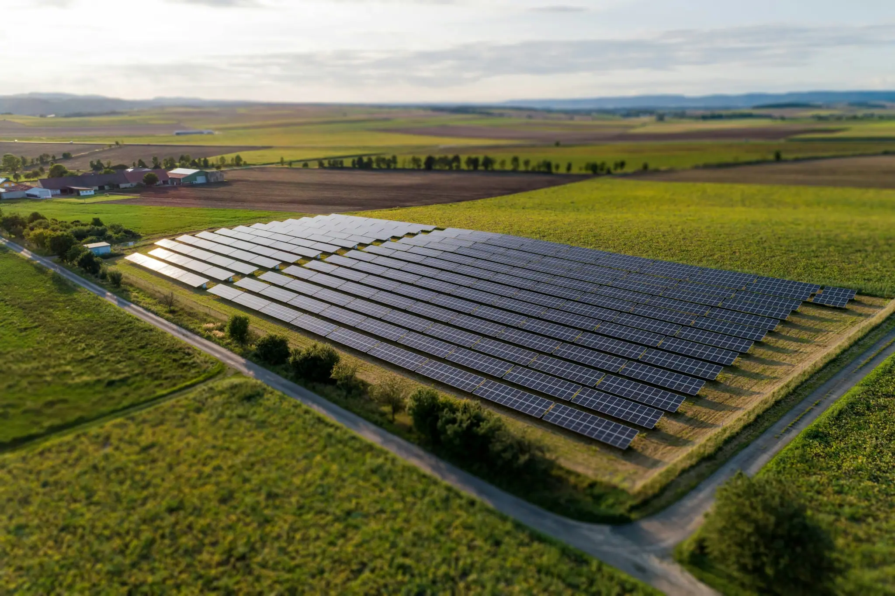
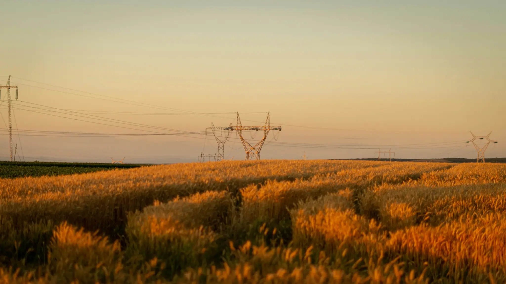
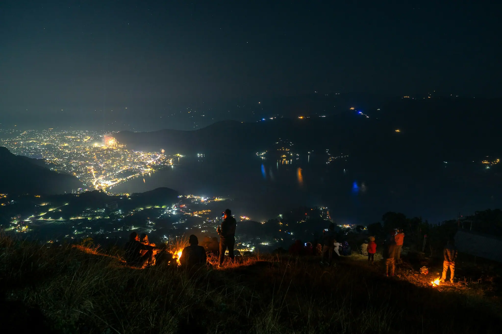

Vetar.
Sunce.
Voda.
Struja iz vetra, sunca i vode, od izvora do vas.
Skrolujte
Nudimo vam
Nudimo vam
60+ MWpartnerskih elektrana iz obnovljivih izvora, u više država
1–12godina traju naši ugovori o otkupu
0–24hcall centar, svakog dana u godini
Šta radimo
Otkupljujemo. Prodajemo. Garantujemo.
01 / 03
Otkupljujemo
Električnu energiju iz obnovljivih izvora, od investitora koji znaju potencijal zelene energije.
Sigurnost · Stabilnost · Profitabilnost
02 / 03
Prodajemo
Snabdevamo krajnje potrošače električnom energijom, po povoljnim cenama.
Kvalitet · Pouzdanost · Odgovornost
03 / 03
Garantujemo
Poreklo električne energije koju prodajemo, za svaki kilovat-sat.
Transparentnost · Integritet · Ekološka svest

Cena struje se menja svakog sata.
Vaša ne mora.
Vaša cena, ista svakog sata
000306091215182124
„Svaki kilovat-sat koji prodamo ima ime i adresu: reku, vetar ili sunce iz kog je došao. To vam garantujemo, crno na belo.“
Ime PrezimeDirektor, EETS
Garancija poreklaMala hidroelektrana · partner 14
43.6° N · 21.4° E
Za kupce
Struju koju otkupljujemo od reka, vetra i sunca dovodimo do fabrika, pekara i domova.
Recite namgde da je dovedemo.

Recite nam gde da je dovedemo.
Struja iz vode, vetra i sunca, do vaše adrese. Javljamo se u roku od jednog radnog dana.
Šaljemo…
Utikač ide u utičnicu.